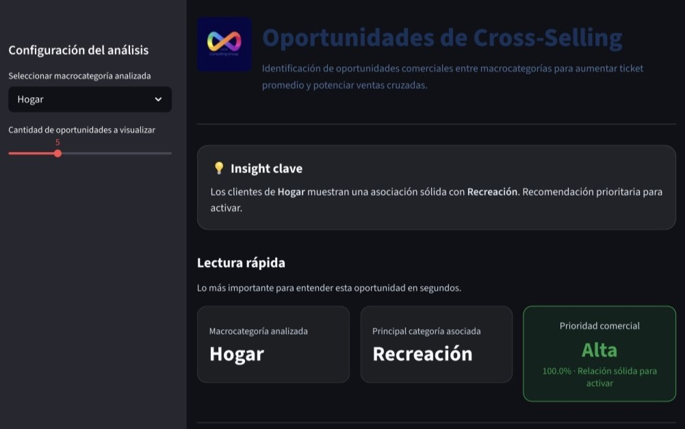
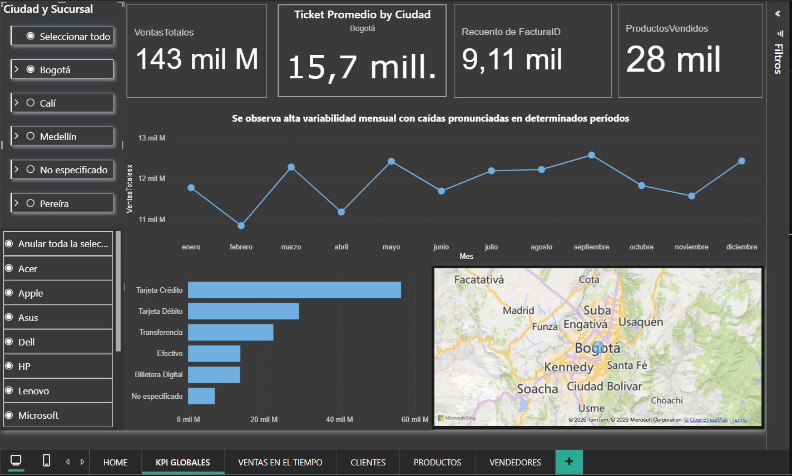
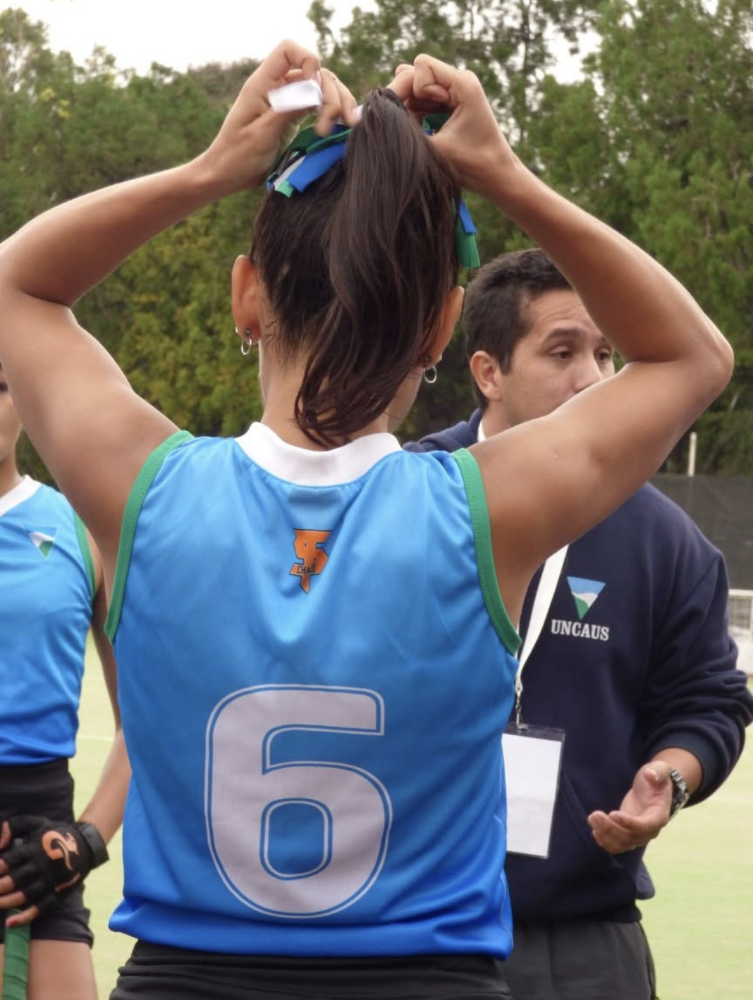

¿Por qué Ingeniería?
Ingeniería me enseñó a descomponer problemas complejos, pensar en sistemas y construir soluciones con método. Esa base técnica sigue presente en la manera en que analizo procesos, estructuras y decisiones.
Data Science · Business Intelligence · Process Optimization
Mi recorrido combina pensamiento técnico, ciencia de datos, comprensión del negocio y comunicación. Busco transformar problemas complejos en soluciones claras, accionables y con impacto.
Donde otros ven disciplinas separadas, yo veo conexiones.
MI HISTORIA
Durante mucho tiempo pensé que Ingeniería, Ciencia de Datos, Marketing y Deporte eran caminos distintos. Hoy entiendo que siempre estuve buscando lo mismo: comprender mejor los problemas para construir mejores decisiones.
Ingeniería me enseñó a descomponer problemas complejos, pensar en sistemas y construir soluciones con método. Esa base técnica sigue presente en la manera en que analizo procesos, estructuras y decisiones.
Descubrí que los datos permiten transformar preguntas en evidencia. Me interesa detectar patrones, modelar escenarios, automatizar análisis y convertir información en recomendaciones accionables.
Los datos no generan impacto sin contexto. El marketing me acercó a las personas, las audiencias y el negocio, y me enseñó a comunicar hallazgos de forma útil para quienes toman decisiones.
Durante más de veinte años el deporte fue mi escuela de estrategia, disciplina y trabajo en equipo. Hoy lo estudio como industria y lo analizo desde datos, negocio, audiencias y tecnología.
ACTUALMENTE
Acompaño estudiantes en programación, análisis de datos y pensamiento técnico, transformando conceptos complejos en explicaciones claras y aplicables.
Colaboro con un exfutbolista profesional en el desarrollo de su marca personal y de ESDEC, integrando posicionamiento, contenido, estrategia digital y construcción de comunidad.
Profundizo en estrategia, organizaciones, economía, audiencias, comunicación y toma de decisiones dentro de la industria deportiva.
Amplío mis conocimientos en automatización de procesos, integraciones y ecosistemas Microsoft. También realizo un intensivo de inglés conversacional para fortalecer mi comunicación profesional.
CASO DESTACADO · DATA & BUSINESS
Proyecto de ciencia de datos para identificar oportunidades de cross-selling a partir del comportamiento transaccional, combinando análisis exploratorio, machine learning y pensamiento de negocio.

PROYECTOS

Pipeline con API, despliegue, monitoreo de drift y observabilidad para modelos predictivos.

Dashboard orientado a KPIs, segmentación, performance y toma de decisiones, con modelo estrella y seguridad por roles.
Proyecto en desarrollo para analizar rendimiento, eventos de partido, KPIs deportivos y patrones de juego mediante Python y Power BI.
MI FORMA DE TRABAJAR
Entender el negocio, las personas y las restricciones.
Definir qué necesitamos comprender o mejorar.
Explorar, limpiar y estructurar la información disponible.
Detectar patrones, validar hipótesis y construir soluciones.
Traducir hallazgos en mensajes claros y relevantes.
Convertir insights en decisiones, automatizaciones o mejoras.
EXPERIENCIA
Facilitación del aprendizaje, seguimiento de estudiantes, resolución de dudas técnicas y comunicación de conceptos de programación y análisis.
Estrategia de contenidos y activaciones digitales. Comunidad duplicada de 3.000 a más de 6.000 seguidores, más de 1.000 piezas y +33,3% en interacciones.
Desarrollo de identidad, contenido, posicionamiento y presencia digital para una marca personal deportiva y un proyecto de desarrollo deportivo.
Desarrollo de soluciones con Python, SQL, Power BI, Machine Learning, APIs y visualización orientadas a negocio, rendimiento y toma de decisiones.

DEPORTE COMO PERSPECTIVA
Practiqué hockey durante más de veinte años y crecí siguiendo distintas disciplinas. Esa experiencia me enseñó estrategia, adaptación, disciplina, competencia y trabajo en equipo.
Hoy aplico esa mirada a proyectos de Sports Analytics, audiencias, marketing deportivo y experiencias digitales. El deporte es una de mis áreas de especialización, no un límite para mi perfil.
FORMACIÓN CONTINUA
Python, SQL, Machine Learning, Power BI, análisis exploratorio, despliegue y soluciones orientadas a negocio.
Estrategia, organizaciones, economía, comunicación, audiencias y gestión dentro de la industria deportiva.
Nivel general B1 con comprensión lectora C1. Actualmente fortaleciendo conversación, listening y comunicación para contextos profesionales.
LO QUE VIENE
Me interesan oportunidades técnicas y de negocio donde pueda aportar desde Ciencia de Datos, Business Intelligence, automatización, optimización de procesos, producto, analítica y tecnología aplicada.